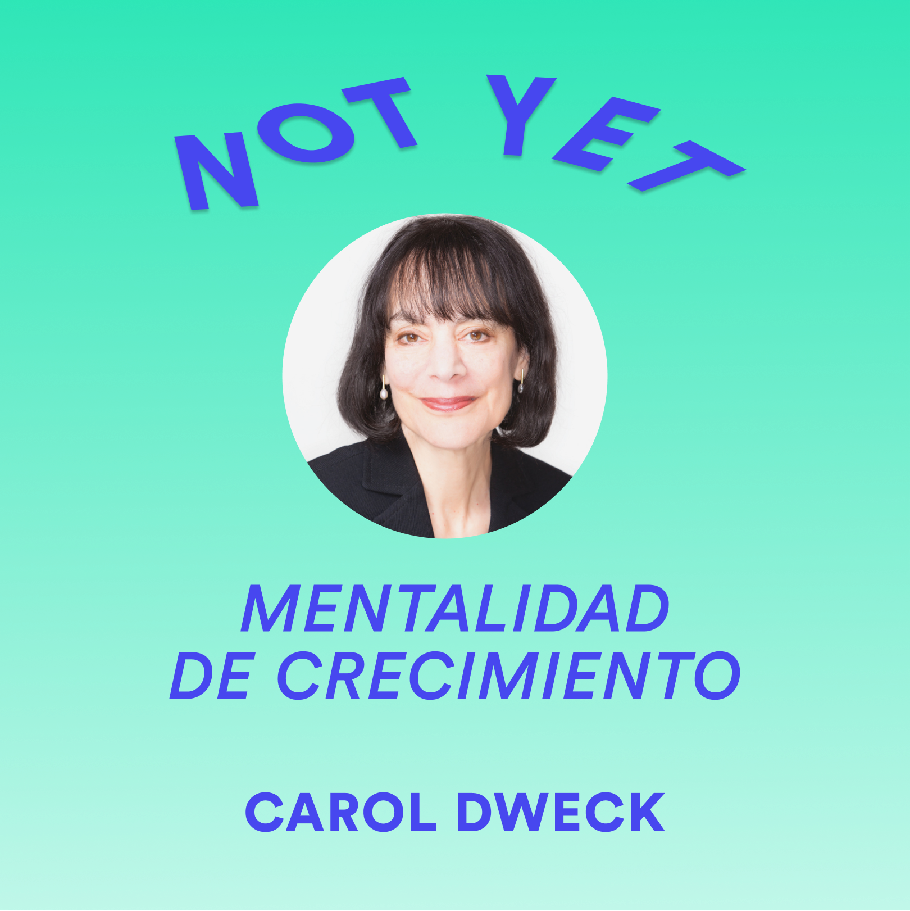

Consejos para mejorar tu learnability
Los escenarios de caos se pueden ver desde la mirada de las oportunidades.
30 de diciembre de 2020
Decidimos aprovechar esta situación de pandemia para lanzar un nuevo formato online, con el que investigar y aprender cómo puede ser nuestra presencia digital, además de seguir cerca de la comunidad para contribuir dando visibilidad a las mujeres en el sector tecnológico.
Learnability by WTM nació lleno de energía positiva y con un objetivo en mente: mostrar referentes cercanos de aprendizaje tecnológico y desarrollo profesional. Porque si un referente no lo sientes cercano, no sirve como tal.
Hemos querido hacer un parón para reflexionar todo lo que en estos meses Neus Portas, Carmen Bartolomé y Angélica Bellver han compartido con nosotras.
Hemos aprendido a ser flexibles y no perder el foco. Hemos probado pronto el nuevo formato de entrevistas en vídeo, después añadimos los podcast y este mes, el formato es un post. Nos hemos atrevido a hacer algo que no habíamos hecho antes, con un objetivo muy claro, y hemos descubierto que nos gusta mucho hacerlo.
Como parte de esta reflexión, queremos compartir los elementos que hemos encontrado comunes en todas ellas, según lo que aprendimos sobre Learnability en la entrevista con Neus Portas. Para tener una guía con la que seguir avanzando en el aprendizaje aquí están nuestros aprendizajes:
1. Cómo te ves a ti misma, influye en lo que crees que puedes conseguir.
La psicóloga Carol Dweck acuñó el término Mentalidad de Crecimiento y lleva años estudiando el poder de las creencias en nuestro crecimiento.
Cuando pensamos de forma binaria que sí tenemos capacidad para algo o que no la tenemos, estamos desechando las posibilidades de avanzar para conseguir el objetivo marcado. Desde la Mentalidad de Crecimiento se entiende que, si todavía no has conseguido el objetivo, no es porque no tengas capacidad. Seguramente puedas mejorar algo o dedicarle más esfuerzo y así, es más probable que lo consigas.
Nuestras entrevistadas demuestran lo significativo que es creer en ti misma y en tus capacidades más allá de las creencias colectivas, para perseverar y conseguir lo que te has propuesto:
“Tienes que saber, desde que naces, todas las opciones que tienes.” Angélica Bellver
“Hay cosas que son complejas porque no nos hemos acostumbrado a pensar en ese esquema mental desde pequeños.” Carmen Bartolomé
Si ves un abanico de posibilidades sesgado por estereotipos y prejuicios, tal vez te estés perdiendo eso que está hecho para ti. Date el gusto y la oportunidad de atreverte a mirar de otra manera. Descubre qué es lo que de verdad llama tu atención.
Nadie nace sabiendo pero la Mentalidad de Crecimiento te ayuda a creer en tus capacidades y como consecuencia, a atreverte. Pensar que puedes hacer algo que quieres y se te atraganta, significa romper esquemas mentales que resultan familiares pero frenan el aprendizaje. Es en sí mismo, un proceso de aprendizaje dentro del aprendizaje.
Neus, Carmen y Angélica, son para nosotras un ejemplo de mentalidad de crecimiento. Ellas nos muestran que no viene mal darse un empujoncito de credibilidad para ponerse metas ambiciosas pero alcanzables.
2. Cuando pruebas y fallas, tu no eres el fallo. No tengas miedo al fracaso.
Atreverse siempre. Cuando pruebas y fallas, tu no eres el fallo, eres el impulso que continúa hasta que lo consigue. Carol Dwek explica que las personas con Mentalidad de Crecimiento, cuando fallan, preguntan el por qué y se ponen en marcha para mejorar y poder superar el reto la próxima vez.
“Tenemos miedo al fracaso y que nos digan que no. No pasa nada, yo he recibido muchos noes. Para que te den el sí, primero te tienen que dar el no. Preséntate, y si no te cogen, pregunta por qué no te han cogido y vuelve a intentarlo.” Carmen Bartolomé.
Las personas con mentalidad fija, que sería la mentalidad contraria, se esfuerzan menos porque piensan que el fallo es definitivo e irreversible. De igual manera, cuando consiguen algo y se les felicita por ello, deciden no repetirlo no sea que no salga bien y haya que ponerse la etiqueta del fracaso.
Neus, como experta en la materia, nos ayuda entender el por qué de algunos comportamientos como el síndrome del impostor (de nuevo las creencias y esquemas mentales aprendidos). A la vez nos invita a aplicar cuanto antes y con rigor, para mitigar esas emociones que sacan a la luz esas inseguridades.
“Hemos crecido con la idea de que hasta que no te lo sabes perfecto no vas al examen o no te atreves a aplicarlo” y “Aprender con rigor y aplicar cuanto antes, no está reñida una cosa con la otra.” Neus Portas.
¿Cómo aplicamos esto al aprendizaje de algo concreto? Aquí, Carmen nos contó su experiencia aprendiendo por proyectos. Ella divide el problema en trozos pequeños, aprende la cantidad de conocimiento que necesita, lo justo en el contexto del proyecto y así consigue:
“Lanzarte a hacer e ir corrigiendo sobre la marcha es la mejor forma de evolucionar.” Carmen Bartolomé.
La idea principal de la metodología de Neus es aplicar la filosofía Lean al aprendizaje. En el proceso de aprendizaje hay varias fases y necesita ser un proceso consciente para darle rigor. Si en las primeras fases vamos a adquirir el conocimiento, en otra aplicamos rápido ese trozo de aprendizaje y por último reflexionamos.
¿Cuánto de lo que me había propuesto he aprendido? ¿Qué necesito mejorar o aprender ahora?. Cuando organizas el aprendizaje en iteraciones mínimas de valor, fallar empieza a importarte menos.
Puedes percibir que empiezas a estar en el camino del aprendizaje o en el camino de crear y desarrollar tu trayectoria profesional.
3. Concreta un objetivo para no perder el foco y cultivar la motivación.
Una vez que está más claro que podemos conseguir lo que nos propongamos y tenemos menos miedo a fallar y más predisposición a atrevernos a hacer, es momento de concretar un objetivo.
“En el aprendizaje, lo que tienes que tener es un objetivo.” Angélica Bellver.
Es muy probable que surjan muchos objetivos o que de tantas vueltas para elegirlo, nos quedemos paralizadas. ¿Será realmente lo que quiero? ¿No será mejor este otro? ¿Este objetivo me llevará donde quiero? Y ya por último, rizando el rizo al máximo, ¿qué es lo que quiero?
“Fijarte un objetivo, qué quieres hacer y prepararte para tu formación personal. Con humildad, para aceptar que siempre puede haber cosas novedosas y con disciplina, porque no hay tiempo para todo.” Carmen Bartolomé.
Un objetivo pequeño, humilde, con las pretensiones justas para poder aplicar pronto y no perdernos en el mundo de las ideas. Si quieres aprender React o CSS, elige un proyecto pequeño sin querer abarcar demasiado. Así podrás aplicar cuanto antes y descubrir qué es lo que más disfrutas dentro de esas materias tan grandes.
Reenfoca tu aprendizaje. Aunque te parezca aburrido hacer una calculadora con Javascript o copiar una página para aprender CSS, recuerda que el aprendizaje es un proceso.
“Si empiezo a hacer algo y me gusta, quiero hacerlo todos los días.” Angélica Bellver.
No hay tiempo para todo y por eso un objetivo pequeño y robusto te ayudará a resistir en los momentos difíciles, a estar motivada y crecer cada día.
Descubre cúal es tu disciplina, no hace falta ponerse horarios estrictos. Si estás concentrada y disfrutas en el momento de estudiar, aplicar y reflexionar podrás sentir el avance.
Descubre cómo aprendes mejor, con qué tipo de contenidos aprendes más y a qué horas del día retienes más información. A partir de ahí, organízate para mantener el foco y la motivación.
“A lo mejor, lo pruebas y descubres que te gusta.”“Pruebas, fallas, vuelves a intentarlo… lo más importante es no dejar de intentarlo.” Angélica Bellver.
Cuanto antes apliques, antes podrás saber si eso te gusta o prefieres pivotar. Pruébalo aunque dudes porque quizás esta vez, sí te guste. Da valor al proceso, no solo al resultado.
4. Busca apoyo para desarrollar tu trayectoria.
Una vez has empezado a conocerte como aprendedora, te has atrevido a probar y quieres profundizar es fácil que te des cuenta de que sola te cuesta más.
Elegir formación autodidacta o reglada dependerá de lo que quieres obtener. Estudiar una formación reglada por tener un título no parece que tenga mucho sentido y recorrer tu camino completamente sola tampoco.
“Detecto que necesito formación cuando siento una limitación y ya he probado por mi cuenta.” Angélica Bellver.
Una cosa es la formación y el puesto de trabajo al que te da acceso, y otra cosa es la calidad de vida que persigues. No es la salida profesional lo que más me preocupa, es más una cuestión de querer saber. Carmen Bartolomé.
En los dos tipos de formaciones sucede que tienes que aprender por ti misma y que el apoyo de gente con la que compartes un objetivo común, aporta valor en ambas direcciones.
En el entorno de la formación reglada, estás rodeada de profesores dispuestos a ayudarte, compañeros con tus mismos intereses. Igualmente puedes combinarlo con rodearte de comunidades afines, compartir lo que aprendes y aprender de los demás.
Si no hay tiempo para todo, la elección del tipo de formación que elijas, dependerá de si necesitas un título particular, quieres presentarte a unas oposiciones, has creado tu propia empresa o quieres evolucionar dentro de tu empresa.
Escucha, comparte y aplica cuanto antes, aprende a tu manera, descubrirás que tú también puedes.
“Escuchar las experiencias de los demás, te muestra que tú también puedes.” Angélica Bellver.
Como conclusión, hay muchas maneras de aprender y muchos formatos que seguir experimentando para, cada último miércoles de mes, seguir mejorando nuestra Learnability con un nuevo contenido.
Os invitamos a descubrir cuál es vuestra manera de aprender mejor de la mano de mujeres cercanas con las que vamos a seguir conversando para inspirarnos y descubrir nuestro camino.